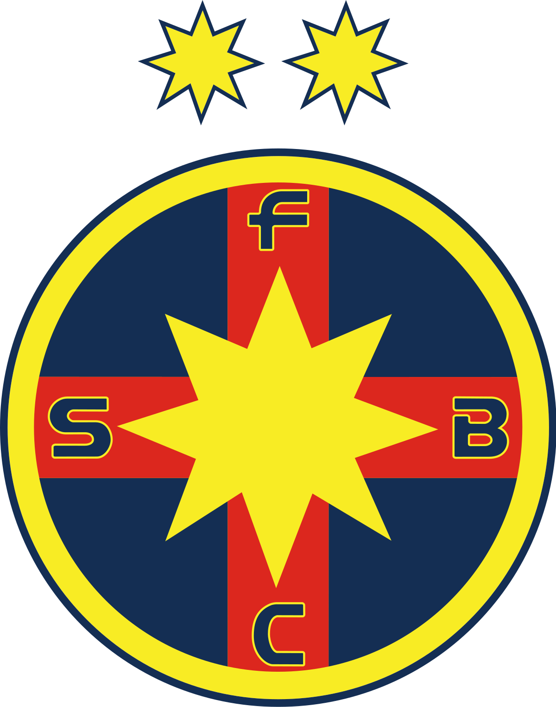

Interesting Fact
In the 1986 European Cup final, Helmuth Duckadam saved four consecutive penalties, setting a record.
FC Steaua Bucuresti was founded in 1947 and is the most successful football clubs in Romania.
| Player | Years Active |
|---|---|
| Helmuth Duckadam | 1982-1986 |
| Marius Lăcătuș | 1983-1990, 1993-2000 |
| Gheorghe Hagi | 1987-1990 |
In the 1986 European Cup final, Helmuth Duckadam saved four consecutive penalties, setting a record.
One of the most beautiful goals in the history of FC Steaua Bucuresti: